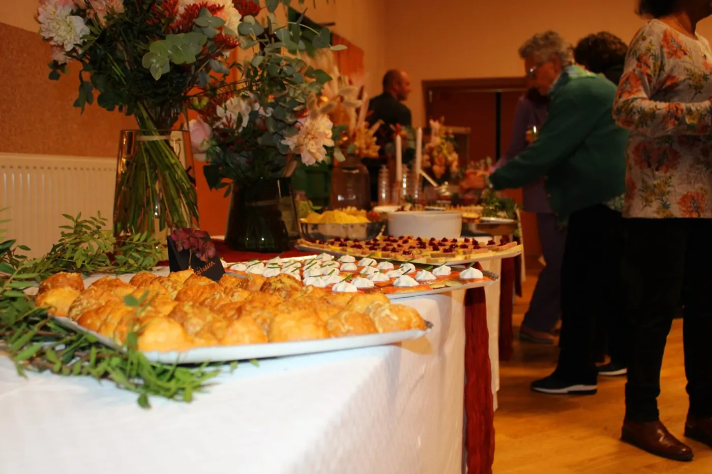

Une équipe à vos côtés, pour rester auprès des vôtres
Après les obsèques, recevoir ses proches peut faire du bien. Mais il faut aussi prévoir le repas, accueillir les invités et penser à tout ce qui suit.
Chez Entre proches, nous prenons en charge cette organisation avec attention et discrétion. Vous savez à qui vous adresser, et vous pouvez consacrer ce moment aux personnes réunies autour de vous.


Pourquoi Entre proches ?
Entre proches est né d’une conviction simple : après des funérailles, une famille devrait pouvoir se retrouver sans avoir à gérer une réception en plus du reste.
Un repas ou une collation peut offrir le temps de se parler, de partager un souvenir ou simplement d’être ensemble. Notre rôle est de rendre ce moment possible, en nous occupant de sa préparation, du service et du rangement selon vos besoins.

Stevann, votre interlocuteur
Je m’appelle Stevann Labbé et j’ai créé Entre proches pour aider les familles à se retrouver après les obsèques, sans avoir à organiser elles-mêmes le repas.
Mon expérience dans la restauration et le service traiteur m’a appris à préparer une réception et à m’adapter aux imprévus. Mais dans ces moments-là, il faut aussi savoir rester discret et laisser toute la place à la famille.
Quand vous me contactez, nous parlons simplement de ce que vous souhaitez : une collation ou un repas, le lieu, les horaires et le nombre de personnes attendues. Je vous aide à choisir ce qui convient, puis mon équipe et moi prenons le relais.
Stevann LabbéFondateur d’Entre proches
Une petite équipe familiale
Entre proches s’appuie sur une petite équipe familiale. Concrètement, cela permet de garder un contact direct et de s’adapter à votre situation.
Certaines familles souhaitent un temps de partage court autour d’une collation. D’autres préfèrent réunir leurs proches autour d’un repas. Nous échangeons avec vous pour organiser ce moment selon vos souhaits, puis nous prenons le relais sur place.

Notre façon d’intervenir
- Avant
Nous prenons le temps de vous écouter
Avant la prestation, nous faisons le point sur ce dont vous avez besoin : le lieu, les horaires, le nombre de convives et les éventuelles habitudes ou contraintes alimentaires. Nous vous expliquons clairement ce que nous pouvons prendre en charge.
- Le jour venu
Nous restons présents avec discrétion
Le jour venu, l’équipe installe, assure le service et veille au bon déroulement du repas ou de la collation. Elle intervient quand c’est nécessaire, en respectant le rythme et l’intimité de votre famille.
- Après
Nous nous occupons aussi de la fin
Une fois le moment terminé, nous débarrassons, nettoyons et rangeons l’espace utilisé. Vous n’avez pas à quitter vos proches pour vous occuper de la réception.
Parlons du moment que vous souhaitez organiser
Vous pouvez nous contacter pour nous expliquer votre situation, même si vous ne connaissez pas encore le nombre exact de personnes ou la formule qui conviendrait. Nous regarderons ensemble ce qu’il est possible de prévoir.
Échanger sur votre besoin